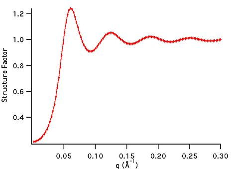
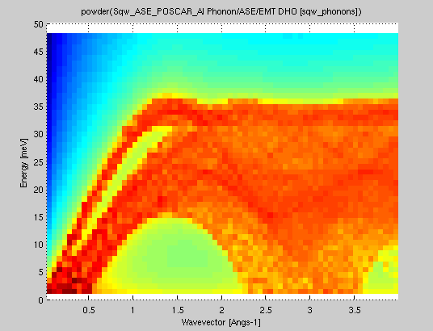

iFit: Models (fit models)
How to use models
Models are numerical functions, that take input axes and a parameter
set, and return a function evaluation.
Such models are defined as iFunc objects,
and used in iFit when there is a need to e.g. compute and plot a
function evaluation corresponding with the axes of an iData object.
Similarly, this function evaluation can be used iteratively in an
optimization process in order to find a parameter set that matches
best the iData object Signal, using the fits method (refer to the Fit
page).
Models can be used in the following ways (for instance 'model' may
be 'gauss'):
>> model % display model information
>> disp(model) % idem, extensive information
>> plot(model) % plot the model with its default settings
>> model(p, x, y ...) % evaluate the model with parameters p, and axes x,y,...
>> model([], x, y ...) % evaluate the model with axes x,y,... and automatic parameter guess
>> model('guess', x, y ...) % idem
>> a(model, p) % evaluate the model onto the iData object 'a' axes with parameters p
>> fits(a, model, p) % fit the model onto the iData object 'a'
>> fits(model, a, p) % same as above
>> save(model, 'filename', 'mat') % save the Model as a Matlab file. orher formats are possible (YAML, m, JSON, XML...)
>> iFunc('filename') % import a Model stored as m, YAML, MAT, JSON file format.
To create a model, use the ifitmakefunc
dialogue window (see below), or instantiate an iFunc
object.
>> model = gauss;
>> model = gauss+lorz;
>> model = iFunc('p(1)*x+p(2)')
>> model = iFunc('a=p(1); b=p(2); signal=a*x+b')
You can edit their code to see how to define new models:
>> edit gauss % edit the function definition (from a file)
>> edit voigt
>> edit(voig) % edit the object definition
It is also possible to create a model out of an
iData (data set) object. Then, the model
parameters are the total intensity scaling, as well as an offset
and a scaling factor per axis. In order to create a model from a
data file, use:
>> iFunc(iData('filename'))
will create a data set object and derive a model out of it.
List of default fit models
The 1D functions are signal=f(parameters,
x), and the 2D functions are signal=f(parameters, x, y).
Function
|
Description
|
Dimensionality
|
Parameters
|
allometric
|
Allometric (power/asymptotic
law)
|
1D
|
Amplitude Offset Exponent
BackGround
|
bigauss
|
Asymmetric Gaussian
|
1D |
Amplitude Centre HalfWidth1
HalfWidth2 Background |
bilorz
|
Asymmetric Lorentzian
|
1D |
Amplitude Centre HalfWidth1
HalfWidth2 Background |
| bose |
Bose factor
|
1D |
Tau [h/2pi/kT] in "x" units
|
dho
|
Damped harmonic oscillator
|
1D |
Amplitude Centre HalfWidth
Background Temperature (in
"x" unit)
|
dirac
|
Dirac peak
|
1D
|
Amplitude Centre
|
doseresp
|
Dose-response curve with
variable Hill slope. This is a sigmoid or S-shaped.
|
1D
|
Amplitude Center Slope
BackGround
|
expon
|
Exponential
decay
|
1D |
Amplitude Tau Background
|
expstretched
|
Exponential
- Stretched
|
1D |
Amplitude Tau Exponent
Background
|
| gauss |
Gaussian where the HalfWidth is in fact σ. The 'true'
half width is thus 1.177*HalfWidth.
|
1D |
Amplitude Centre HalfWidth
Background
|
green
|
Green function
|
1D
|
Amplitude Centre HalfWidth
Background |
heaviside
|
Heaviside (gap)
The GapSide indicates
raising (+) or falling (-) gap.
|
1D
|
Amplitude Centre GapSide
Background
|
langevin
|
Langevin function for
magnetic polarization
|
1D
|
Amplitude Center Width
BackGround
|
laplace
|
Laplace
distribution function
|
1D |
Amplitude Center Width
BackGround |
lognormal
|
Log-Normal
distribution
|
1D
|
Amplitude Center Width
BackGround
|
lorz
|
Lorentzian
(aka Cauchy) used with Amplitude
uncorrelated to Width.
|
1D |
Amplitude Centre HalfWidth
Background |
ngauss
|
multiple Gaussian where the
HalfWidth is in fact σ. The 'true'
half width is thus 1.177*HalfWidth. |
n*1D
|
|
nlorz
|
multiple Lorentzian used
with Amplitude uncorrelated to Width. |
n*1D
|
|
pareto
|
Pareto distribution function
|
1D
|
Amplitude Exponent Width
BackGround
|
poisson
|
Poisson distribution
WARNING: The 'x' axis is assumed to be
an integer array (counts)
|
1D
|
Amplitude Center BackGround
|
pseudovoigt
|
Pseudo Voigt
|
1D
|
Amplitude Center Width
BackGround LorentzianRatio
|
quadline
|
Quadratic
line (parabola)
|
1D |
Quadratic Linear Constant
|
sigmoid
|
Sigmoidal
S-shaped curve (similar to Dose Response)
|
1D |
Amplitude Center Width
BackGround |
sine
|
Sine
function
|
1D |
Amplitude Phase_Shift Period
BackGround
|
sinedamp
|
Damped
Sine function (exponential decay)
|
1D |
Amplitude Phase_Shift Period
BackGround Decay
|
strline
|
Straight
line
|
1D |
Gradient Background
|
triangl
|
Triangular
|
1D |
Amplitude Centre HalfWidth
Background |
tophat
|
Top-Hat
rectangular function
|
1D |
Amplitude Centre HalfWidth
Background |
twoexp
|
Two exponential decay
functions
|
1D |
Amplitude1 Tau1 Amplitude2
Tau2 Background
|
voigt
|
Voigt
function
|
1D |
Amplitude Centre
HalfWidth_Gauss HalfWidth_Lorz Background
|
gauss2d
|
Gaussian
function with tilt angle where the
HalfWidth is in fact σ. The 'true' half width is thus
1.177*HalfWidth. |
2D |
Amplitude Centre_X Center_Y
HalfWidth_X HalfWidth_Y Angle Background
|
lorz2d
|
Lorentzian
function with tilt angle used with
Amplitude uncorrelated to Width. |
2D |
Amplitude Centre_X Center_Y
HalfWidth_X HalfWidth_Y Angle Background |
plane2d
|
Planar function
|
2D |
Slope_X Slope_Y Background
|
pseudovoigt2d
|
Pseudo Voigt with tilt
angle |
2D |
Amplitude Centre_X Center_Y
HalfWidth_X HalfWidth_Y Angle Background LorentzianRatio
|
quad2d
|
Quadratic (parabola) with
tilt angle |
2D |
Amplitude Centre_X Center_Y
Curvature_X Curvature_Y Angle Background |
gaussnd
|
n-dimensional
Gaussian
|
nD
|
|
sf_hard_spheres
|
Hard Sphere structure factor
[Percus-Yevick]
|
1D  |
R rho
|
rietveld
|
Rietveld
refinement of powder sample
with full McStas
instrument model
|
1D,
2D, 3D
|
sample structure,
instrument parameters
|
| sqw_sine3d |
Phonon dispersions as sine
wave in HKL with a damped harmonic oscillator energy
dispersion |
4D (HKLw)
|
zone center, energy gaps, periodicity, DHO
width, temperature, background
|
sqw_spinw
|
Spin-wave dispersion in HKL using SpinW. |
4D (HKLw)
 |
energy broadening, Temperature, Amplitude,
coupling parameters J...
|
| sqw_vaks |
Phonon dispersions in perovskite cubic
crystals using the Vaks parameterisation |
4D (HKLw)
|
acoustic and optical energies, coupling
parameters, soft mode frequency, DHO width, temperature,
background |
| sqw_cubic_monoatomic |
Phonon dispersions in a monoatomic cubic
crystal using the Dynamical matrix. |
4D (HKLw)
|
acoustic force constant ratio and energy
scaling, DHO width, temperature, background |
| sqw_phonons |
Phonon dispersions from the Dynamical matrix,
using forces estimated by ab-initio DFT using ASE or PHON/QE.
|
4D (HKLw)
 |
Creation: POSCAR,
CIF,
or PDB, ...
Then, only the DHO line shape. ab-initio implies no
(few) tunable parameter. |
sqw_linquad
|
A phenomenological dispersion which can
describe e.g. an acoustic/linear mode, with quadratic
expansion in other directions. This model can be considered
as a local expansion in series of any dispersion.
|
4D (HKLw)
|
Energy and location of 'gap', slopes,
directions of slopes, DHO width, temperature, background |
sqw_acoustopt
|
A phenomenological dispersion which can
describe e.g. a pure acoustic or optical mode, with
quadratic expansion around a minimum. |
4D (HKLw)
|
Energy and location of 'gap', slopes,
directions of slopes, DHO width, temperature, background |
")
>> gauss
>> a = gauss;
The list of all available fit functions can be obtained from the command:
>> fits(iData);
which also produces the plot above.
Specialized models
Small Angle
Scattering models (neutrons, x-rays)
We list below a number of models used to describe neutron and
x-ray scattering from matter. The structure factor S(q) accounts
for the structure of matter at the atomistic/molecular level,
whereas the form factor P(q) accounts for the geometrical
arrangement of large scale scattering units (micelles, tubes,
...). In practice, the scattering from a material can be described
by:
I(q)
= P(q).S(q)
where q is the momentum exchange in the material.
These models have been extracted from:
Structure factors
|
Description
|
Dimensionality
|
Parameters
|
sf_hard_spheres
|
Hard Sphere structure factor
[Percus-Yevick]
|
1D |
R rho
|
sf_square_well
|
structure factor of particles
interacting with a square well potential [Sharma]
|
1D
|
R rho epsilon Delta T
|
sf_sticky_hard_spheres
|
Sticky Hard Sphere structure
factor [Baxter/Menon]
|
1D
|
R rho tau
|
Form factors: small angle
|
Description
|
Dimensionality
|
Parameters
|
ff_core_shell
|
Spherical/core shell form
factor [Guinier]
|
1D
|
R1 R2 eta1 eta2
|
ff_sphere
|
Sphere form factor [Guinier]
|
1D
|
R eta
|
Powder structure
refinement (Rietveld)
The rietveld model performs a structure refinement (atom
type and position, structure group) of a powder by comparing a
measured diffractogram with a simulated diffractogram using McStas and CrysFML.
This model requires external software to be installed on your
computer. See Requirements below.
Powder diffraction
|
Description
|
Dimensionality
|
Parameters
|
rietveld
|
Rietveld
refinement of powder sample
with full McStas
instrument model
|
1D,
2D, 3D
|
sample structure,
instrument parameters
|
The 'rietveld' model allows to prepare a sample+instrument
model in order to fit a diffraction/structure data set.
It is obtained by making use of the CrysFML library:
The procedure is to import a crystal structure (CIF,
ShelX, FullProf/CFL format)
then compute the HKL d-F2 list of reflections
(for crystal or powder), and insert this powder model into a
diffractometer simulated using McStas.
The detector image, which is the convolution of the sample structure
with the instrument resolution, is then compared with a given
diffractogram, and optimised to refine the crystal parameters.
The syntax to build the model, and then perform the refinement is:
>> model=rietveld(structure, ...., instrument, ....)
>> p = fits(model, measurement);
where the 'structure' describes the initial sample structure (space
group, cell parameters abc αβγ, atom positions, ...); it can be
given as a CIF,
FullProf/CFL or ShelX file, as well
as from a struct type
variable with fields 'Spgr' and
'cell', followed with atoms
(giving xyz Biso occupancy spin charge, where only xyz are
mandatory, others are optional):
Sample.cell = [10.242696 10.242696 10.242696 90.000 90.000 90.000];
Sample.Spgr = 'I 21 3';
Sample.Ca1 = [0.46737 0.00000 0.25000 0.60046 0.50000 0.0 2.0];
...
the instrument is the name of the McStas instrument description (templateDIFF.instr is the
default). The McStas simulation can be controlled using the default
McStas options, as described in the dedicated
help page : dir, ncount,
mpi, seed, gravitation, compile, monitors. The monitors
options is particularly recommended to specify which monitor file to
use from the virtual experiment. The resulting model data set should
be of the same type as the diffractometer measured data set (e.g.
TOF-angle, height-angle, ...), but not necessarily with same binning
and axes range.
Any other 'name=value'
argument is assumed to be an instrument parameter. Any scalar
parameter is made into a model parameter, whereas string/char
parameters are set as fixed instrument parameters. By default, the
sample structure (powder/single crystal) is made available to the
McStas instrument by mean of a 'reflections.laz'
file which should be used by a PowderN
or Isotropic_Sqw
component. This name can be changed by specifying the
'CFML_write=filename' option.
An example of Rietveld model is obtained from a CFL file, and the
templateDIFF instrument including PowderN(reflections=Powder,...).
We thus specify the fixed instrument parameter Powder='reflections.laz'. The
wavelength is kept fixed at 2.36, and we use monitor names matching
BananaTheta.
>> model = rietveld([ ifitpath 'Data/Na2Ca3Al2F14.cfl' ], 'templateDIFF.instr', 'Powder=reflections.laz; lambda="2.36"; monitors=BananaTheta');
Once built, it is possible to set constraints on the model with the
syntax such as (see iFunc
page) :
>> model.parameter='fix' % to lock its value during a fit process
>> model.parameter='clear' % to unlock value during a fit process
>> model.parameter=[min max] % to bound value
>> model.parameter=[nan nan] % to remove bound constraint
>> model.parameter='' % to remove all constraints on 'parameter'
>> model.Constraint='' % to remove all constraints
Then we import a data set
>> measurement = iData([ ifitpath 'Data/nac_1645179.dat' ]);
The refinement is then obtained by starting :
>> parameters = fits(model, measurement)
with optional arguments as described in the Fit
page (the 'constraints' argument of fits is partly redundant with the model
constraints seen above).
Remember to bound most or all of the model parameters for a faster
and more reliable convergence of the optimization.
You may look at the following resources to get material structure
files:
References:
- CrysFML, Commission on Crystallographic
Computing, IUCr Newsletter No.1, pp 50-58, January 2003
[link].
- McStas: K. Lefmann and K. Nielsen, Neutron News 10, 20,
(1999) ; P. Willendrup, E. Farhi and K. Lefmann, Physica B, 350
(2004) 735.
Requirements/installation:
McStas must be installed.
Packages exist for all major systems (Linux as RedHat and Debian
flavours, Windows, Mac OSX). For Debian-class systems:
cd /etc/apt/sources.list.d
sudo wget http://packages.mccode.org/debian/mccode.list
sudo apt-get update
sudo apt-get install mcstas-suite
The CrysFML does not need to be installed, as the used bits are
assembled in the cif2hkl
fortran programme, which generates HKL d-F2 reflection lists
suitable for the PowderN and Isotropic_Sqw McStas components. The
cif2hkl programme is part of the iFit distribution, and is compiled
by calling the local fortran compiler (gfortran) on demand.
Phonon/spin-wave
dispersion (simple)
The sqw_sine3d model provides a simple way to model phonon-type
dispersions, including simple spin-waves,
acoustic and optical modes, incommensurate dispersions.
Limitation: this model only handles simple
sine dispersions, and can not treat mode exchange (interferences).
For more advanced spin-wave models, use the sqw_spinwave Model (below).
S(q,w)
|
Description
|
Dimensionality
|
Parameters
|
| sqw_sine3d
|
Phonon dispersions as sine
wave in HKL (3D) with a damped harmonic oscillator energy
dispersion |
4D
(HKLw)
|
zone center, energy gaps,
periodicity. Axes are in rlu.
|
Each dispersion is a sine wave which goes continuously from
energy E0 to E1, along 3 principal lattice directions (HKL). The
dispersion has an energy width (DHO). Schematically, the
dispersion relation is:
w(Q) = E0 + (E1-E0)*sin(Q_freq*pi*(Q-Q0));
along principal axes
where the wave-vector/momentum Q is expressed in reciprocal
lattice units [r.l.u]. The parameters of this model allow extended
flexibility in the description of the mode. Along the 3D HKL
volume, a dispersion is described with 10 parameters.
The Q_freq parameter indicates how many dispersion sine
'arches' there are per reciprocal lattice unit [rlu]. A Q_freq
of 1/2 means the dispersion extends from e.g. Q=0 to Q=2 rlu. A Q_freq
of 1 means it extends from Q=0 to Q=1 rlu, and a Q_freq of
2 means there are two arches between Q=0 and Q=1 rlu (all these
with Q0=0). A Q_freq of 0 sets a flat dispersion.
To create the model without defined parameter values, you may
use:
sw = sqw_sine3d;
or alternatively, to define starting parameters:
sw = sqw_sine3d(p);
where p=[...] is a vector containing the parameter values.
It may be given as 1,2,3 and 14 value vector, as detailed below.
A spin-wave could for instance mostly use Q0=0,
Q_freq=1, E0=0, E1>0 (2 arches from Q=0 to 1 rlu). In a
simple anti-ferromagnet, the gap width is E1-E0=4J.S with
J=exchange energy and S=magnetic moment of spins.
>> sw = sqw_sine3d([ E0 E1 Q_freq ]) % creates a dispersion from E0 to E1 with given Q frequency, e.g. .5, 1 or 2
A phonon acoustic branch could use Q0=0, Q_freq=.5, E0=0
(1 arch from Q=0 to 1 rlu).
>> acoustic = sqw_sine3d(Emax) % creates an acoustic dispersion up to Emax
An phonon optical branch could use Q0=0, Q_freq=.2,
E0>E1 E1>0 (1 arch from Q=0 to 1 rlu with Q=0 energy - Raman
frequency).
>> optical = sqw_sine3d([ E0 E1 ]) % creates an optical dispersion from E0 to E1
The model parameters allow to tune the dispersion:
- To shift the minimum/maximum Q of the dispersion, move QH0,QK0,QL0
parameters.
- To change the extent of the dispersion in Q, vary QH_freq,QK_freq,QL_freq
parameters.
- To change to minimum and maximum energy, move E0 and
E1_qh,E1_qk,E1_ql parameters.
- To model an incommensurate dispersion, move both QH0,QK0,QL0
and the QH_freq,QL_freq,QK_freq parameters to
incommensurate (non rational) values.
- An anisotropic model can be obtained by having different E1
and Q_freq parameters along axes.
- A 1D or 2D dispersion can be obtained when setting the
frequencies (e.g. QK_freq QL_freq) to 0
The model parameters are:
p(
1)=
E1_qh energy at QH half period [meV]
p(
2)=
E1_qk energy at QK half period [meV]
p(
3)=
E1_ql energy at QL half period [meV]
p(
4)=
E0 zone-centre energy gap [meV]
p(
5)=
QH0 QH zone-centre [rlu]
p(
6)=
QK0 QK zone-centre [rlu]
p(
7)=
QL0 QL zone-centre [rlu]
p(
8)=
QH_freq QH frequency [multiples of pi]
p(
9)=
QK_freq QK frequency [multiples of pi]
p(
10)=
QL_freq QL frequency [multiples of pi]
p(
11)=
Gamma Damped Harmonic Oscillator width in energy [meV]
p( 12)= Temperature
[K]
p(
13)=
Amplitude
p(
14)= Background
The axes needed for the evaluation are expressed in rlu for
QH,QK,QL and in meV for the energy.
The Model evaluation is as usual (in 4D):
model(p, qh, qk, ql, w) %
return a matrix. p can be [] to use guessed/default parameters
iData(model, p, qh, qk, ql,
w) % return an iData.
A usage example is as follows:
>> ac=sqw_sine3d(5); % an acoustic branch up to 5 meV
>> qh=linspace(0,1,50);qk=qh; ql=qh'; w=linspace(0.01,10,50); % the axes for evaluation
>> f=iData(ac,[],qh,qk,ql,w); % evaluate the model onto given axes
>> plot3(log(f(:,:,1,:))); % plot as volume in [QH,QK,w, QL=0]. You can also use surf and scatter3 for other rendering
The axes are given as vectors, but the second is made
non-parallel to the others, to indicate we wish to build a volume
out of this. Without transposing the vector, as all axes are the
same length, they would be interpreted as event data, and the
resulting evaluation would only contain 50 values.
It is possible to stack as many modes as possible, in different
flavors. In this case it is advisable to link e.g. the Temperature
and Background parameters:
>> acoustic = sqw_sine3d(5); optical = sqw_sine3d([ 10 8 ]); sw = sqw_sine3d([ 2 4 1 ]);
>> disp3 = acoustic + optical + sw;
>> disp3.Temperature_2 = '"Temperature"'; % Temperature_2 = Temperature (1st sin3d)
>> disp3.Temperature_3 = '"Temperature"'; % Temperature_3 = Temperature
>> disp3.Name='sqw_sine3d: acousitc+optical+sw';
>> mlock(disp3, {'Background_2','Background_3'}); % keep them as 0 (default)
>> qh=linspace(0,1,50);qk=qh; ql=qh; w=linspace(0.01,10,51); % the axes for evaluation
>> f=iData(disp3,[],qh,qk,ql,w); % evaluate using initial model parameters
>> plot3(log(f(:,:,1,:))); % plot as volume in [QH,QK,w, QL=0].
The plot (surf), plot3, scatter3, and slice
methods for plotting all provide nice looking rendering of volume
data. See Plot/3D page.
Spin-wave model
(SpinW)
The sqw_spinw model can embed a spin-wave model from the
SpinW to "
simulate magnetic structures and excitations of given spin
Hamiltonian using classical Monte Carlo simulation and linear
spin wave theory."
Basically, SpinW allows to model a crystal structure including a
spin Hamiltonian in the form:
H = ∑ij
SiJijSj
+ ∑i SiAiSi
+ B ∑i giSi
where S are the spin vectors, J are the spin-spin
coupling matrices, A are the spin anisotropy matrices, B
is the external magnetic field, and g is the g-tensor.
S(q,w)
|
Description
|
Dimensionality
|
Parameters
|
sqw_spinw

|
Spin-wave dispersion in HKL
using SpinW.
|
4D
(HKLw)
|
energy broadening,
Temperature, Amplitude, parameters J...
Axes are in rlu.
|
A SpinW object must first be created, and is then converted into an
iFunc object using the syntax:
s = sqw_spinw(sw);
or
s = iFunc(sw);
The SpinW toolbox allows
to build spin-wave models incuding spin-spin pair coupling,
anisotropy terms and external field contribution. The model is
then converted into an iFunc object, so that fitting and plotting
is straightforward. An easy way to build a SpinW object is to read
a CIF
file, with syntax:
s = sqw_spinw(sw('cif_file'))
Additional options can be used when creating the Model, with:
s = sqw_spinw(sw, options);
where 'options' is a structure that can hold:
- options.component: a string to specify the component to
use as intensity, as documented in sw_egrid
function. Default is 'Sperp'.
Suggested is also 'Sxx+Syy+Szz'.
Once created, the model can be evaluated and used for
fitting.
The model parameters are:
p(1)=
Gamma
energy broadening (instrumental) [meV]
p(2)= Temperature
of the material [K]
p(3)= Amplitude
p(4...)= coupling
parameters of the Hamiltonian (J)
The axes needed for the evaluation are expressed in rlu for
QH,QK,QL and in meV for the energy [1 meV = 241.8 GHz = 11.604 K =
0.0965 kJ/mol]. The model can be evaluated by giving axes and model
parameters (see examples below).
- When all axes are given as vectors of same orientation and
same length, the HKLE set is assumed to be list of 'events'.
- When the H K L axes are vectors of same length/orientation,
the HKL locations is assumed to be a q-path in the BZ, but the E
(energy) axis can be of different length/orientation to compute
the Model along (q,E) path, resulting in a 2D object. Typically,
the sqw_kpath function does this, to provide the phonon
dispersion curve along principal directions.
- When the H K L E axes are given as mixed orientations/length,
as vectors or matrices, the Model evaluation is done on a HKLE
cube, which is well suited to visualize the whole dispersion
surfaces. In the example below, ql has a
different orientation (it is transposed) as qh and qk,
which triggers a 4D HKLE cube evaluation.
The Model evaluation is as usual (in 4D):
model(p, qh, qk, ql, w) %
return a matrix. p can be [] to use guessed/default parameters
iData(model, p, qh, qk, ql,
w) % return an iData
As an example, we plot a simple
square lattice Heisenberg antiferromagnet model:
sq = sw_model('squareAF',2,0);
% create the SW object (using SpinW)
s=sqw_spinw(sq);
%
create the Model
qh=linspace(0.01,1.5,50);qk=qh; ql=qh';
w=linspace(0.01,10,50);
f=iData(s,s.p,qh,qk,ql,w); plot3(log(f(:,:,1,:)));
% evaluate and plot
References
S. Toth and B. Lake, J. Phys.: Condens. Matter 27,
166002 (2015).
Requirements
In principle, the SpinW Matlab toolbox
must have been installed from e.g. <https://github.com/tsdev/spinw>
or <https://www.psi.ch/spinw/spinw>.
The version 2.1 of SpinW is included in iFit, so that the
sqw_spinw Model does not require any additional
installation.
Phonon dispersion
in perovskites
The sqw_vaks model computes the dispersion of the 5
lowest phonon
dispersions in perovskite cubic crystals. It is based on the Vaks
parametrization (see references below). The TA1,TA2,LA,TO1 and TO2
dispersions are obtained from 8 parameters, and a DHO line shape
is added. The dispersions are anisotropic, with 'valley' and soft
mode.
The dynamical matrix is 5x5 and its eigenvalues are the mode
frequencies.
Limitation: even though this is model uses
few parameters, the dynamic range is limited to e.g. |q|
< 0.3-0.5 rlu and |w| < 100 meV.
S(q,w)
|
Description
|
Dimensionality
|
Parameters
|
| sqw_vaks |
Phonon dispersions in perovskite cubic
crystals using the Vaks parameterisation |
4D (HKLw)
|
acoustic and optical , coupling parameters,
soft mode frequency. Axes in rlu.
|
To create the model without defined parameter values, you may
use:
s = sqw_vaks;
or alternatively, to define starting parameters:
s = sqw_vaks(p);
where p=[...] is a vector containing the parameter values.
It may be given as a 12 value vector or a string, as detailed below.
The model parameters are the following:
p(
1)=
At transverse acoustic slope [meV2/rlu2]
p(
2)=
Al longitudinal acoustic slope [meV2/rlu2]
p(
3)=
Aa anisotropic acoustic slope [meV2/rlu2]
p(
4)=
St soft mode transverse soft optical slope [meV2/rlu2]
p(
5)=
Sa soft mode anisotropic soft optical slope [meV2/rlu2]
p(
6)=
Vt transverse acoustic-optical coupling [meV2/rlu2]
p(
7)=
Va entered as: anisotropic acoustic-optical coupling [meV2/rlu2]
p(
8)=
w0 soft mode frequency at q=0, depends on temperature [meV]
p(
9)=
Gamma Damped Harmonic Oscillator width in energy [meV]
p( 10)= Temperature
[K]
p(
11)= Amplitude
p(
12)= Background
The axes needed for the evaluation are expressed in rlu for
QH,QK,QL and in meV for the energy [1 meV = 241.8 GHz = 11.604 K =
0.0965 kJ/mol]. The model can be evaluated by giving axes and model
parameters (see examples below).
- When all axes are given as vectors of same orientation and
same length, the HKLE set is assumed to be list of 'events'.
- When the H K L axes are vectors of same length/orientation,
the HKL locations is assumed to be a q-path in the BZ, but the E
(energy) axis can be of different length/orientation to compute
the Model along (q,E) path, resulting in a 2D object. Typically,
the sqw_kpath(s) function does this, to provide the
phonon dispersion curve along principal directions.
- When the H K L E axes are given as mixed orientations/length,
as vectors or matrices, the Model evaluation is done on a HKLE
cube, which is well suited to visualize the whole dispersion
surfaces. In the example below, ql has a
different orientation (it is transposed) as qh and qk,
which triggers a 4D HKLE cube evaluation.
- When the qh,qk,ql axes span over a whole Brillouin
zone, e.g. [-0.5 : 0.5], the phonon density of states
(DOS) is computed, and stored in s.UserData.DOS, as well
as partial DOS in s.UserData.DOS_partials (per mode).
- You may evaluate the powder dispersion using the sqw_powder(s)
function.
The plot (surf), plot3, scatter3, and slice methods
for plotting all provide nice looking rendering of volume data. See
Plot/3D page.
There are predefined parameter settings for 'KTaO3',
'SrTiO3' and 'BaTiO3'
crystals.
A usage example is:
>> s=sqw_vaks('KTaO3'); % create model, with KTaO3 parameters
>> qh=linspace(0,.5,50);qk=qh; ql=qh'; w=linspace(0.01,10,51);
>> f=iData(s,[],qh,qk,ql,w); % evaluate model into an iData
>> scatter3(log(f(:,:,1,:)),'filled'); % plot ql(1)=0 plane
References:
Acoustic phonon
dispersion in mono-atomic cubic crystal
The sqw_cubic_monoatomic model provides 3 acoustic phonon dispersions
from a dynamical matrix computation. It uses only 2 parameters for
these 3 modes, plus additional DHO parameters. Each dispersion is
basically:
w(k) = Emax*sin(k.a)
along principal axes.
The dynamical matrix is 3x3 with sine and cosine terms. Eigenvalues
provide the mode energies.
S(q,w)
|
Description
|
Dimensionality
|
Parameters
|
| sqw_cubic_monoatomic |
Phonon dispersions in a monoatomic cubic
crystal using the Dynamical matrix. |
4D (HKLw)
|
acoustic force constant ratio and scaling
energy. Axes in rlu. |
The model parameters are the following:
p(
1)=
C_ratio C1/C2 force constant ratio first/second neighbours
p(
2)=
E0 sqrt(C1/m) energy [meV]
p(
3)=
Gamma Dampled Harmonic Oscillator width in energy [meV]
p(
4)= Temperature
[K]
p(
5)= Amplitude
p(
6)= Background
The axes needed for the evaluation are expressed in rlu for
QH,QK,QL and in meV for the energy [1 meV = 241.8 GHz = 11.604 K =
0.0965 kJ/mol]. The model can be evaluated by giving axes and model
parameters (see examples below).
- When all axes are given as vectors of same orientation and
same length, the HKLE set is assumed to be list of 'events'.
- When the H K L axes are vectors of same length/orientation,
the HKL locations is assumed to be a q-path in the BZ, but the E
(energy) axis can be of different length/orientation to compute
the Model along (q,E) path, resulting in a 2D object. Typically,
the sqw_kpath function does this, to provide the phonon
dispersion curve along principal directions.
- When the H K L E axes are given as mixed orientations/length,
as vectors or matrices, the Model evaluation is done on a HKLE
cube, which is well suited to visualize the whole dispersion
surfaces. In the example below, ql has a
different orientation (it is transposed) as qh and qk,
which triggers a 4D HKLE cube evaluation.
- When the qh,qk,ql axes span over a whole Brillouin
zone, e.g. [-0.5 : 0.5], the phonon density of states
(DOS) is computed, and stored in s.UserData.DOS, as well
as partial DOS in s.UserData.DOS_partials (per mode).
- You may evaluate the powder dispersion using the sqw_powder(s)
function.
A usage example is:
>> s=sqw_cubic_monoatomic([ 3 3 ]); % create model, with C1/C2=3 E0=3
>> qh=linspace(0,.5,50);qk=qh; ql=qh'; w=linspace(0.01,10,51);
>> f=iData(s,[],qh,qk,ql,w); % evaluate model into an iData
>> plot3(log(f(:,:,1,:))); % plot ql(1)=0 plane
The plot (surf), plot3, scatter3, and slice methods
for plotting all provide nice looking rendering of volume data. See
Plot/3D page.
References:
Phenomenological
linear/quadratic dispersion
This model is suited to describe a linear or quadratic dispersion.
The dispersion slopes (in [meV/rlu]) are given for user defined axes
(e.g. principal crystal directions in reciprocal space). Two
directions must be given from which the 1st one is used as is (but
normalised) to indicate the 'linear' dispersion direction, the
second axis is used to define an ortho-normal reciprocal coordinate
frame. The 2nd and 3rd dispersion slopes apply into this frame.
The general dispersion relation has the form:
w(q) = √[ (Slope1*(q-HKL0) +
E0)2 + Slope22*(q-HKL0)2 +
... ]
where the Slope parameters are specified for 3 directions.
Along dir1 the dispersion is linear, along other directions
it is quadratic (becomes linear far from HKL0).
Such a model can be used to model an acoustic/linear
dispersion (with a given slope/velocity), which has a given energy
E0 at a given HKL0 location, use:
- s=sqw_linquad([H0 K0 L0 E0]);
The HKLE0 location is typically the centre of a measurement scan.
The sqw_acoustopt
model (below) is somewhat similar, but specifies the minimum
of the dispersion instead of a specific location from which the
expansion is linear/quadratic.
S(q,w)
|
Description
|
Dimensionality
|
Parameters
|
sqw_linquad
|
A phenomenological dispersion which can
describe an acoustic or optical mode. This model can be
considered as a local expansion in series of any dispersion. |
4D (HKLw)
|
Energy and location of 'gap', slopes,
directions of slopes, DHO width, temperature, background |
The model parameters are the following:
p(
1)=
DC_Hdir1 Slope1 dispersion direction, linear,
H [rlu]
p(
2)=
DC_Kdir1 Slope1 dispersion direction, K [rlu]
p(
3)=
DC_Ldir1 Slope1 dispersion direction, L [rlu]
p(
4)=
DC_Hdir2 Slope2 dispersion direction, H
(transverse) [rlu]
p(
5)=
DC_Kdir2 Slope2 dispersion direction, K
(transverse) [rlu]
p(
6)=
DC_Ldir2 Slope2 dispersion direction, L
(transverse) [rlu]
p(
7)= DC_Slope1
Dispersion slope along 1st axis, linear [meV/rlu]
p(
8)= DC_Slope2
Dispersion slope along 2nd axis (transverse to 1st, in plane)
[meV/rlu]
p(
9)= DC_Slope3
Dispersion slope along 3rd axis (transverse to 1st, vertical)
[meV/rlu]
p(
10)=
Ex_H0 Excitation location H [rlu]
p(
11)=
Ex_K0 Excitation location K [rlu]
p(
12)=
Ex_L0 Excitation location L [rlu]
p( 13)= Ex_E0_Center
Excitation location, Energy [meV]
p( 14)= DHO_Amplitude
p( 15)= DHO_Damping
Excitation damping, half-width [meV]
p( 16)= DHO_Temperature
Temperature [K]
p(
17)= Background
The axes needed for the evaluation are expressed
in
rlu for QH,QK,QL and in meV for the energy [1 meV =
241.8 GHz = 11.604 K = 0.0965 kJ/mol]. The model can be evaluated
by giving axes and model parameters (see examples below).
- When all axes are given as vectors of same orientation and
same length, the HKLE set is assumed to be list of 'events'.
- When the H K L axes are vectors of same length/orientation,
the HKL locations is assumed to be a q-path in the BZ, but the
E (energy) axis can be of different length/orientation to
compute the Model along (q,E) path, resulting in a 2D object.
Typically, the sqw_kpath function does this, to
provide the phonon dispersion curve along principal
directions.
- When the H K L E axes are given as mixed
orientations/length, as vectors or matrices, the Model
evaluation is done on a HKLE cube, which is well suited to
visualize the whole dispersion surfaces. In the example
below, ql has a different orientation (it is
transposed) as qh and qk, which triggers a 4D
HKLE cube evaluation.
- When the qh,qk,ql axes span over a whole Brillouin
zone, e.g. [-0.5 : 0.5], the phonon density of states
(DOS) is computed, and stored in s.UserData.DOS, as
well as partial DOS in s.UserData.DOS_partials (per
mode).
- You may evaluate the powder dispersion using the sqw_powder(s)
function.
The Slope parameters allow to estimate the mode group velocity.
Using the definition rlu = 2pi/
a where
a is the
excitation periodicity, we can derive:
velocity[m/s] = Slope[meV/rlu]
*a[Angs] /2pi * 151.9
A usage example is:

- s=sqw_linquad([ 0.25 0 0 5])
- qh=linspace(0,0.5,51);qk=qh;
ql=qh'; w=linspace(0.01,20,50);
- f=iData(s,[],qh,qk,ql,w);
% evaluate model into an
iData
- plot3(log(f(:,1,:,:)));
Phenomenological
acoustic/optic dispersion (quadratic)
This model is suited to describe a quadratic dispersion with
given minimum/gap. The dispersion slopes (in [meV/rlu]) are
given for user defined axes (e.g. principal crystal directions
in reciprocal space). Two directions must be given, which are
used to define an ortho-normal reciprocal coordinate frame. The
dispersion slopes apply into this frame.
The general dispersion relation has the form:
w(q) = √[ E02 + Σ(Slope2*(q-HKL0)2
]
where the Slope parameters are specified for 3 directions. Along
given directions the dispersion is quadratic (becomes linear far
from HKL0).
Such a model can be used to model an
acoustic/linear
dispersion (with a given slope/velocity), which has a given energy
minimum E0 at a given HKL0 location, use:
- s=sqw_acoustopt([H0 K0 L0 E0]);
To model an
acoustic mode, use e.g.
H0=K0=L0=E0=0
and adjust the
Slope parameters.
To model an
optical mode, use e.g.
H0=K0=L0=0
but set
E0 to a finite energy (e.g. zone centre energy).
To model something else, use other parameters... ;-)
The
sqw_linquad
model (above) is somewhat similar, but specifies a
specific
HKLE location instead of the minimum of the dispersion from which
the expension is quadratic.
S(q,w)
|
Description
|
Dimensionality
|
Parameters
|
sqw_acoustopt
|
A phenomenological dispersion which can
describe an acoustic or optical mode.
|
4D (HKLw)
|
Energy and location of 'gap', slopes,
directions of slopes, DHO width, temperature, background |
The model parameters are the following:
p(
1)=
DC_Hdir1 Slope1 dispersion direction, H [rlu]
p(
2)=
DC_Kdir1 Slope1 dispersion direction, K [rlu]
p(
3)=
DC_Ldir1 Slope1 dispersion direction, L [rlu]
p(
4)=
DC_Hdir2 Slope2 dispersion direction, H
(transverse) [rlu]
p(
5)=
DC_Kdir2 Slope2 dispersion direction, K
(transverse) [rlu]
p(
6)=
DC_Ldir2 Slope2 dispersion direction, L
(transverse) [rlu]
p(
7)=
DC_Slope1 Dispersion slope along 1st axis
[meV/rlu]
p(
8)=
DC_Slope2 Dispersion slope along 2nd axis
(transverse to 1st, in plane) [meV/rlu]
p(
9)=
DC_Slope3 Dispersion slope along 3rd axis
(transverse to 1st, vertical) [meV/rlu]
p(
10)=
Ex_H0 Minimum of the dispersion, H [rlu]
p(
11)=
Ex_K0 Minimum of the dispersion, K [rlu]
p(
12)=
Ex_L0 Minimum of the dispersion, L [rlu]
p( 13)= Ex_E0_Center
Minimum of the dispersion, Energy [meV]
p( 14)= DHO_Amplitude
p( 15)= DHO_Damping
Excitation damping, half-width [meV]
p( 16)= DHO_Temperature
Temperature [K]
p(
17)= Background
The axes needed for the evaluation are expressed in
rlu
for QH,QK,QL and in meV for the energy [1 meV = 241.8 GHz = 11.604
K = 0.0965 kJ/mol]. The model can be evaluated by giving axes and
model parameters (see examples below).
- When all axes are given as vectors of same orientation and
same length, the HKLE set is assumed to be list of 'events'.
- When the H K L axes are vectors of same length/orientation,
the HKL locations is assumed to be a q-path in the BZ, but the
E (energy) axis can be of different length/orientation to
compute the Model along (q,E) path, resulting in a 2D object.
Typically, the sqw_kpath function does this, to
provide the phonon dispersion curve along principal
directions.
- When the H K L E axes are given as mixed
orientations/length, as vectors or matrices, the Model
evaluation is done on a HKLE cube, which is well suited to
visualize the whole dispersion surfaces. In the example
below, ql has a different orientation (it is
transposed) as qh and qk, which triggers a 4D
HKLE cube evaluation.
- When the qh,qk,ql axes span over a whole Brillouin
zone, e.g. [-0.5 : 0.5], the phonon density of states
(DOS) is computed, and stored in s.UserData.DOS, as
well as partial DOS in s.UserData.DOS_partials (per
mode).
- You may evaluate the powder dispersion using the sqw_powder(s)
function.
The Slope parameters allow to estimate the mode phase velocity for
acoustic modes when E0=0. Using the definition rlu = 2pi/
a
where
a is the excitation periodicity, we can derive:
velocity[m/s] = Slope[meV/rlu]
*a[Angs] /2pi * 151.9
A usage example is:
- s=sqw_acoustopt([ 0.25 0 0 5])
- qh=linspace(0,0.5,51);qk=qh;
ql=qh'; w=linspace(0.01,20,50);
- f=iData(s,[],qh,qk,ql,w);
% evaluate model into an
iData
- plot3(log(f(:,1,:,:)));
Phonon dispersion
from ab-initio force estimate and dynamical matrix
The sqw_phonons model computes phonon dispersions using
the Atomic Simulation
Environment (ASE) in the so-called small displacement
methodology. The only needed input for the model to run is the
name of a configuration file describing the material lattice and
atom positions. This file can be in any ASE
supported format, e.g. POSCAR,
CIF,
PDB, ... This model
requires to install external software on the computer. See Requirements (and
Installation) below.
You are also advised to read the dedicated Phonons documentation
which provides a guided Tutorial.
This documentation lists all possible options.
S(q,w)
|
Description
|
Dimensionality
|
Parameters
|
sqw_phonons
|
Phonon dispersions from the Dynamical matrix,
using forces estimated by ab-initio using ASE and a
selection of DFT codes (EMT, GPAW, ABINIT, Elk, QuantumEspresso, VASP). |
4D (HKLw)
|
Creation: POSCAR,
CIF,
PDB, ...
Then, only the DHO line shape. ab-initio implies no
(few) tunable parameter. Axes in rlu. |
The procedure is entirely automatic. A supercell is automatically
generated, then forces are estimated by differentiation of a set of
atom displacements. Temporary data files are created. The model can
then be evaluated onto an HKLE trajectory, and plotted.
A few
words about the theory
Let us consider a perfect crystal, at very low temperature, in the
harmonic approximation close to its equilibrium. The dynamical
matrix D is defined as:
Dαβ=1/√(MαMβ)
∂2V/(∂uα∂uβ)
where V is the inter-atomic potential, M is
the atom mass, αβ are atom indices, u is
the displacement of these atoms around their equilibrium position.
The equation of motions is then:
d2uα/dt2
= - ∑ Dαβ.uβ
In order to simplify this expression, we assume a periodic motion:
uα=Uα(k)
e i(k.r - ωt)
where r is the position of the atom in a so-called super-cell,
which replicates the lattice primitive cell, and its extent sets the
potential extension distance, which is assumed to vanish at long
distance. k and ω are the momentum and energy of the
wave.
The methodology is then to displace each atom by a small quantity,
then compute the Hellmann-Feynman force F acting on
the atom to restore the equilibrium. This step is commonly achieved
by an ab-initio
code such as VASP, ABINIT and QuantumEspresso. Then
the potential partials ∂2V/(∂uα∂uβ)
are estimated by differentiating the forces as F =
-∇V after displacing atoms by small quantities. Finally, the
dynamical matrix is computed for each desired wave-vector k,
and its eigen-modes are extracted. Currently, there are a few
packages which do perform the dynamical matrix estimate and
diagonalisation steps, among which PHON, PHONON, ASE and PhonoPy. We here use
ASE together with PhonoPy or PHON (when available).
In addition, once the phonon spectrum is known, we can compute the
coherent vibrational density of states g(ω)
as, for each energy ω, the number of phonon modes lying
within a frequency [ω-dω : ω+dω] for
all wavevectors. The density of states is normalised to the total number of modes:
∫g(
ω) d
ω = 3N
The neutron scattering intensity of the vibrational modes is
evaluated as (with a damped harmonic oscillator line shape)
I(Q,ω) ~ Amplitude *
∑ |F(Q)|2 DHO(ω0,Γ)
[n(ω)+1] / ω0
|F(Q)|2 = | ∑ bcoh
e -W(Q)|Q.e|2
e-iQ.r |2
where
e is the phonon mode polarisation vector
(multiplied by √mass), ω
0 is the mode normal
frequency,
bcoh is the coherent
neutron scattering length,
W(Q) is the Debye-Waller
function, and
n(ω) is the Bose factor
(population). The DHO line shape will be centered around the
energy Ω
2 = ω
2 + Γ
2 and Γ is
the mode damping, which holds the imaginary part of the phonon
frequency (when becoming unstable/negative).
The Debye-Waller function is estimated as:
W(Q) = ∑ |Q.e|2
[2n(ω0)+1] / 4ω0
The form factor evolves roughly as e
-1/2 <u^2>Q^2
|Q|
2 which indicates that at low and large Q,
the phonon modes are not intense. In the first Brillouin zone
(e.g. HKL < 0.5), the transverse modes are not measurable
with neutrons as |
Q.e| is null when the transverse
polarisation vector
e is perpendicular to Q. The
Amplitude
parameter includes the incoming neutron flux
I0,
detector efficiency, etc...
Amplitude ~
I0
kf/ki
where kf and ki
are the final and incident neutron wavevectors.
Syntax
The simplest syntax to create the model is to call:
 s = sqw_phonons;
% displays an entry dialog box
and proceeds with a fully automatic computation, and plots final
results. With QuantumEspresso, a dialog may show up to select
pseudo-potentials when there is more than one possibility.
s = sqw_phonons;
% displays an entry dialog box
and proceeds with a fully automatic computation, and plots final
results. With QuantumEspresso, a dialog may show up to select
pseudo-potentials when there is more than one possibility.
The general syntax for creating the S(q,w) model is any of:
s = sqw_phonons('defaults');
% creates a simple fcc Al model and QE
as calculator
s = sqw_phonons(configuration);
s = sqw_phonons(configuration,
options, ...);
s = sqw_phonons(configuration,
calculator, options, ...);
The result is a 4D S(hkl,w) phonon dispersion Model (iFunc object).
You may as well re-import a previous calculation from its
directory, with:
s = sqw_phonons(directory);
Such a directory may contain a POSCAR* file, any previous lattice
definition (atoms.pkl as an ASE Atoms object), phonon and
vibrational calculation steps, as well as PhonoPy FORCE_SETS and
yaml files.
In addition, a web based interface can be
set up very easily by installing, on a Debian-type system, the ifit-web-services
package, and then browse to e.g. http://localhost/ifit-web-services.
Once created, we recommend to save the model with:
>> save 'my_model'
model
You can later load this model again within iFit, without the need to
recompute forces (which may be a long process with DFT codes).
>> load 'my_model'
The model parameters, once built, are the following:
p(
1)= Amplitude
p(
2)=
Gamma Damped Harmonic Oscillator width in energy
[meV]
p(
3)= Background
p(
4)= Temperature
[K] used to compute the Bose factor n(w)
p( 5)= Energy_scaling
The axes needed for the evaluation are expressed in rlu for
QH,QK,QL and in meV for the energy [1 meV = 241.8 GHz = 11.604 K =
0.0965 kJ/mol]. The model can be evaluated by giving axes and model
parameters (see examples below).
- When all axes are given as vectors of same orientation and
same length, the HKLE set is assumed to be list of 'events'.
- When the H K L axes are vectors of same length/orientation,
the HKL locations is assumed to be a q-path in the BZ, but the E
(energy) axis can be of different length/orientation to compute
the Model along (q,E) path, resulting in a 2D object. Typically,
the sqw_kpath function does this, to provide the phonon
dispersion curve along principal directions.
- When the H K L E axes are given as mixed orientations/length,
as vectors or matrices, the Model evaluation is done on a HKLE
cube, which is well suited to visualize the whole dispersion
surfaces. In the example below, ql has a
different orientation (it is transposed) as qh and qk,
which triggers a 4D HKLE cube evaluation.
- When the qh,qk,ql axes span over a whole Brillouin
zone, e.g. [-0.5 : 0.5], the phonon density of states
(DOS) is computed, and stored in s.UserData.DOS, as well
as partial DOS in s.UserData.DOS_partials (per mode).
- The maximum phonon energy is stored as s.UserData.maxFreq
- You may evaluate the powder dispersion using the sqw_powder(s) call.
- The thermo-chemistry quantities can be obtained with the sqw_thermochemistry(s) call.
The resulting iData object can then be plotted, such as in the following example
(grid max energy 50 meV):
>> qh=linspace(0.01,.5,50);qk=qh; ql=qh; w=linspace(0.01,50,51);
>> f=iData(s,[],qh,qk,ql',w); % evaluate model into an iData.
>> plot3(log(f(1,:,:,:))); % plot QH=0 plane
The system
configuration (atoms, unit cell)
The configuration is the location of any file format
supported by ASE, which describes the system geometry (atom types
and positions in the cell). In addition, the system configuration
can be given as a bulk, molecule, crystal and nano-tube constructors
from ASE.
configuration
|
Description
|
a file name
[ ifitpath 'Data/POSCAR_Al']
|
Any file in a format supported by ASE,
including CIF, ETSF, Gromacs, LAMMPS, PDB, SHELX,
VASP/POSCAR, MaterialStudio, XYZ. See full
list. You can use as example (provided in iFit Data
directory):
POSCAR_Al
POSCAR_AlN
POSCAR_MgO
POSCAR_Si
POSCAR_NaCl
POSCAR_SrTiO3
|
'bulk("Cu",
"fcc", a=3.6, cubic=True)'
|
A bulk material, with formula (Cu, MgO,
NaCl), lattice constant and structure (sc, fcc, bcc, hcp,
diamond, zincblende, rocksalt, cesiumchloride, fluorite or
wurtzite). See description of bulk.
bulk("Cu", "fcc", a=3.6)
|
'molecule("isobutane")'
|
Any molecule
known to ASE, e.g. 'isobutene',
'CH3CH2OH', 'CH3COOH', 'COF2', 'CH3NO2', 'CF3CN',
'CH3OH', 'CCH', 'CH3CH2NH2', 'PH3', 'Si2H6', 'O3', 'O2',
'BCl3', 'CH2_s1A1d', 'Be', 'H2CCl2', 'C3H9C', 'C3H9N',
'CH3CH2OCH3', 'BF3', 'CH3', 'CH4', 'S2', 'C2H6CHOH',
'SiH2_s1A1d', 'H3CNH2', 'CH3O', 'H', 'BeH', 'P',
'C3H4_C3v', 'C2F4', 'OH', 'methylenecyclopropane',
'F2O', 'SiCl4', 'HCF3', 'HCCl3', 'C3H7', 'CH3CH2O',
'AlF3', 'CH2NHCH2', 'SiH2_s3B1d', 'H2CF2', 'SiF4',
'H2CCO', 'PH2', 'OCS', 'HF', 'NO2', 'SH2', 'C3H4_C2v',
'H2O2', 'CH3CH2Cl', 'isobutane', 'CH3COF', 'HCOOH',
'CH3ONO', 'C5H8', '2-butyne', 'SH', 'NF3', 'HOCl',
'CS2', 'P2', 'C', 'CH3S', 'O', 'C4H4S', 'S', 'C3H7Cl',
'H2CCHCl', 'C2H6', 'CH3CHO', 'C2H4', 'HCN', 'C2H2',
'C2Cl4', 'bicyclobutane', 'H2', 'C6H6', 'N2H4',
'C4H4NH', 'H2CCHCN', 'H2CCHF', 'cyclobutane', 'HCl',
'CH3OCH3', 'Li2', 'Na', 'CH3SiH3', 'NaCl', 'CH3CH2SH',
'OCHCHO', 'SiH4', 'C2H5', 'SiH3', 'NH', 'ClO', 'AlCl3',
'CCl4', 'NO', 'C2H3', 'ClF', 'HCO', 'CH3CONH2',
'CH2SCH2', 'CH3COCH3', 'C3H4_D2d', 'CH', 'CO', 'CN',
'F', 'CH3COCl', 'N', 'CH3Cl', 'Si', 'C3H8', 'CS', 'N2',
'Cl2', 'NCCN', 'F2', 'CO2', 'Cl', 'CH2OCH2', 'H2O',
'CH3CO', 'SO', 'HCOOCH3', 'butadiene', 'ClF3', 'Li',
'PF3', 'B', 'CH3SH', 'CF4', 'C3H6_Cs', 'C2H6NH', 'N2O',
'LiF', 'H2COH', 'cyclobutene', 'LiH', 'SiO', 'Si2',
'C2H6SO', 'C5H5N', 'trans-butane', 'Na2', 'C4H4O',
'SO2', 'NH3', 'NH2', 'CH2_s3B1d', 'ClNO', 'C3H6_D3h',
'Al', 'CH3SCH3', 'H2CO', 'CH3CN'
molecule("H2O")
|
'nanotube(6,
0, length=4)'
|
A 1D carbon (or other material) nanotube. See
description of nanotube.
|
'crystal(...)'
|
The generic crystal builder from ASE. See
description here.
NaCl:
crystal(["Na", "Cl"], [(0, 0, 0), (0.5, 0.5, 0.5)], spacegroup=225, cellpar=[5.64,5.64,5.64, 90, 90, 90])
Rutile:
crystal(["Ti", "O"], basis=[(0, 0, 0), (0.3, 0.3, 0.0)], spacegroup=136, cellpar=[4.6,4.6,2.95, 90, 90, 90])
|
The different possibilities to specify an
atomic system/molecule in sqw_phonons.
You may look at the following resources to get material structure
files:
General
options
Other options, given as strings, or as a structure, allow to
customise how to create the supercell and other computational tuning
stuff.
An example is:
>> s=sqw_phonons(POSCAR,'ABINIT','nsteps=100; occupations=smearing; ecut=1000; pps=paw;');
More options can be obtained from 'help sqw_phonons':
- target: The 'target=LOCATION'
argument can be set to save these files to a defined directory,
which must pre-exist. Without specification, a temporary
directory will be used.
- supercell: The dimension of the supercell can
be given using e.g. the 'supercell=3'
(for a 3x3x3 supercell) argument, or 'supercell=[2
3 2]'. Let supercell=0 (default) to set
automatically the supercell from the number of atoms in
the material cell as (1000/N)^(1/6).
- calculator: the calculator to use, see below.
- potentials: pseudo potential directory to use, e.g. '/usr/share/elk-lapw/species', '/usr/share/abinit/psp', '/usr/share/espresso/pseudo'.
- diagonalization: 'david'
or 'cg'. or 'rmm-diis'.
The Davidson method is faster than the conjugate-gradient but
uses more memory. The RMM-DIIS is even faster.
- autoplot: evaluates the model on QH=0 plane, and plot
it.
- mpi: The number of CPU's to use can be set with option
e.g 'mpi=4'. This option requires
e.g. OpenMPI to be
installed, and is only validated on Linux systems (sudo
apt-get install openmpi-bin). All codes support MPI. Remember
that the memory usage increases linearly with the number of
processors involved, so in practice you should have about 2GB
per CPU requested. For 16 GB available memory, you can safely
use 8 CPUs.
- command: specify the calculator executable which may
include e.g. "mpirun -np N" when applicable (and options.mpi
should not be set).
- htmlreport: when set to 1, creates a readable report as
an HTML document 'sqw_phonons.html' in the target
directory. The syntax sqw_phonons(..., 'report', ...) also works.
- optimizer: when set, performs a geometry optimization
before computing the forces. This option can be set to 'BFGS', 'LBFGS'
(low memory BFGS), 'MDMin' or 'FIRE', as explained in the ASE
Structure optimization page. If the input configuration is
not close to its equilibrium state, it is worth setting this
option. We recommend to set it to BFGS or MDMin (which are fast)
in all cases.
- accuracy: The 'fast'
choice uses the symmetry operators to lower the number of atom
displacements. The force gradient is using central difference (2
displacements +/- on each axis). The 'very
fast' option (default) halves the number of
displacements and, when available, uses PhonoPy. The
equilibrium forces are used to improve the accuracy of the force
gradient. The 'accurate' choice
is longer to execute (e.g. 3-6 times slower), and computes all
forces ignoring symmetry.
- use_phonopy: when set to 1, or using directly sqw_phonons(...,
'phonopy', ...), the PhonoPy library
is used, which results in a 'very fast'
calculation (using forward difference force gradient), and all
available symmetry operators. This requires PhonoPy to be
available. When not available, the default 'very fast' accuracy choice will be
used (using PHON methodology).
and more specific DFT related options:
- occupations: For metallic and insulator systems, the electron
state occupations should be set by using argument 'metal' (0.3 eV)
'semiconductor' (0.1meV) or 'insulator',
or 'occupations=smearing' or 'occupations=fixed'. You can also
directly specify the smearing width as 'occupations=<value>'
assuming a Fermi Dirac distribution. The unit is eV.
- kpoints: The size of the Monkhorst-Pack grid
can be set using e.g. 'kpoints=3'
or 'kpoints=[3 4 3]'. In order to
compute realistic phonon dispersions, the k-points value should
be at least 3. Values lower should only be used for testing. The
high accuracy value for kpoints3*supercell3
is 6750/N for a N-atom cell, but you may start with smaller
values such as 1000/N. Let kpoints=0 (default) to set
automatically the kpoints from the number of atoms in
the material cell as ∛(1000/N)/supercell.
- xc: type of Exchange-Correlation functional to use,
e.g. default 'xc=PBE'. Other
choices 'LDA','revPBE','RPBE',...
- ecut: The kinetic energy cutoff for
wavefunctions can also be specified using e.g. argument 'ecut=340'. The unit is eV. A good
estimate is to use [200*the number of different atoms]. ABINIT
with paw/pawxml potentials requires larger ecut
(1000-1500eV) and nsteps (100).
- ecutrho (optional): kinetic energy cutoff for charge
density and potential. Typical=4*ecut, suitable for PAW. Larger
value improves convergence, especially for ultra-soft PP (you
should then use 8-12*ecut). Leave it undefined to let the
calculator determine it.
- nsteps (optional): max number of iterations for SCF.
Larger value improves convergence. Leave it undefined to let the
calculator determine it.
- nbands (optional): Number of valence bands for which
wavefunctions are being computed. Should be the number of
electrons /2 and for a metal, 20% more (minimum 4 more). Leave
it undefined to let the calculator determine it.
- toldfe (optional): Convergence threshold on the energy
for selfconsistency. Typical value is 1e-6. Leave it undefined
to let the calculator determine it.
Specific
options for ABINIT
We recommend the PAWXML PBE JTH and PAW PBE GBRV potentials.
- iscf: type of self-consistent cycle. Can be 'NC' (norm-conserving) and 'PAW'.
- potentials: can be a directory path, as well as also
one of 'NC' 'fhi' 'hgh' 'hgh.sc' 'hgh.k'
'tm' 'paw' 'pawxml'
which is then sent to pps below..
- pps: Type of pseudo potential database, any of
- 'fhi' Fritz-Haber-Institute, fast but not very accurate
- 'hgh' Hartwigsen-Goedeker-Hutter
(without semi-core valence electrons) rather fast and moderately accurate
- 'hgh.sc' Hartwigsen-Goedeker-Hutter
(with semi-core valence electrons) rather fast and moderately accurate
- 'hgh.k' Hartwigsen-Goedeker-Hutter
(high k) rather fast and moderately accurate
- 'tm' Troullier-Martins
- 'paw' Projector-Augmented-Wave from ATOMPAW, very good
- 'pawxml' PAW
in XML format (from GPAW) the best, requires more iterations (e.g. ecut=1500; nsteps=100)
Specific
options for GPAW
- mode: GPAW computation
mode as Plane-Wave, Finite Difference, or LCAO (linear
combination of atomic orbitals). Can be 'pw','fd',
or 'lcao'. Default is 'pw'. The 'lcao' mode is fast for large
systems, and requires less memory.
Specific options for Octopus
- pps: Type of pseudo potential database, any of
- 'standard' LDA only for H, Li, C, N, O, Na, Si, S, Ti, Se, Cd
- 'hscv_pbe' Hamann-Schlueter-Chiang-Vanderbilt
- 'hscv_lda' Hamann-Schlueter-Chiang-Vanderbilt
- 'hgh_lda' (Hartwigsen-Goedecker-Hutter LDA pseudopotentials for elements from H to Rn)
- 'sg15' (Optimized Norm-Conserving Vanderbilt PBE up to Bi, no Lanthanides)
Specific
options for QuantumEspresso/PHON
The pseudopotentials are given as many
filenames/directories (UPF format) suitable for QuantumEspresso.
When not given, available potentials will be searched in current
location, the Home directory, and the standard QuantumEspresso
locations (PSEUDO_DIR, $HOME/espresso/pseudo). When more than one
potential is available for an atom type, a list selector is
displayed to request which one to choose. The PBE-PAW potentials
are preferred and pre-selected. Pseudo-potential can be obtained
at QuantomEspresso
PP selector. We recommend the SSSP library, which is
very accurate.
- disp: The generation of the supercell and the forces
can be tuned by choosing the initial atom displacement,
or a random one. Use e.g. 'disp=[ 1 -1
1]' or 'disp=random' or
'random' as argument.
- potential_auto: when set to 1, a 'good'
pseudo-potential will automatically be chosen (e.g. PBE/PAW).
- potentials: a list (cell) of UPF potential files to
use. You may also specify a directory. If not specified, the
user will be prompted for a list of sensible potentials, to
select one per atom. The potential_auto=1 skips the
potential selection dialog, and selects a 'good' potential (PBE
PAW). A typical location is '/usr/share/espresso/pseudo'.
- mixing_ndim: number of iterations used in mixing,
default=8. If you are tight with memory, you may reduce it to 4.
A larger value will improve the SCF convergence, and use more
memory.
- mixing_beta: mixing factor for self-consistency,
default=0.7. use 0.3 to improve convergence.
If you have difficulties in the model SCF convergence,
you may use e.g:
>> s=sqw_phonons(POSCAR,'QuantumEspresso', 'nsteps=200; toldfe=1e-6; occupations=smearing; ecut=500; mixing_ndim=12; miximg_beta=0.3;');
If you are tight on the memory (e.g. the system is large), you may
try (but it may not converge):
>> s=sqw_phonons(POSCAR,'QuantumEspresso', 'ecut=15; mixing_ndim=4; diagonalization=cg');
Specific options for Siesta
-
potentials: should be defined as a path to a directory containing the pseudo-potentials, e.g. '/usr/share/siesta/pseudo/'
- pps: Type of pseudo potential database, any of
- 'fhi' Fritz-Haber-Institute (from ABINIT).
- 'tm' Troullier-Martins (from NNIN).
Specific options for VASP
- pps: can be a structure to define explicitly which flavour of pseudo-potentials have to be used, per element, such as
struct('K','_pv', 'Ca',
'_pv', 'Rb', '_pv', 'Sr', '_sv', 'Y', '_sv', 'Zr',
'_sv', 'Nb', '_pv', 'Cs', '_sv', 'Ba', '_sv', 'Fr', '_sv',
'Ra', '_sv', 'Sc', '_sv')
or better struct('B','_h','C','_h','N','_h','O','_h','F','_h','H','_h','Li','_sv','Be','_sv','Na',
'_sv','Mg','_pv','K','_sv','Ca','_sv','Rb','_sv','Sr','_sv','Cs','_sv','Ba','_sv','Sc','_sv','Ti','_pv',
'V','_pv','Cr','_pv','Mn','_pv','Fe','_pv','Ni','_pv','Cu','_pv','Y','_sv','Zr','_sv','Nb','_pv','Mo','_pv',
'Tc','_pv','Ru','_pv','Rh','_pv','Pd','_pv','Hf','_pv','Ta','_pv','W','_pv','Re','_pv','Os','_pv','Al','_h',
'Si','_h','P','_h','S','_h','Cl','_h','Ga','_h','Ge','_h','In','_d','Sn','_d','Tl','_d','Pb','_d','Bi','_d','Fr','_sv','Ra','_sv')
Choosing a
calculator (DFT code)
The sqw_phonons model may use any of the calculators
listed below:
'calculator=...'
|
Description
|
time elapsed [s]
|
Delta [meV/atom] |
 VASP VASP
| Plane-wave PAW code. Requires a
specific license.
| 525 (4.6)
|
|
 QuantumEspresso_ASE QuantumEspresso_ASE |
Density-functional theory, plane waves, and
pseudopotentials based code for electronic-structure
calculations and materials modeling.
Same as above, but use our ASE/PhonoPy interface.
|
87
|
SSSP: 0.3 |
| QuantumEspresso | Density-functional theory, plane waves, and
pseudopotentials based code for electronic-structure
calculations and materials modeling. Same as above, but uses PHON. This calculator can not
compute the mode intensity/polarisation vectors.
| 90
| SSSP: 0.3
|
| ELK | Full Potential-All Electrons LAPW code. A
very efficient all-electrons code. Slow but reliable.
| 9820
| 0.3 |
| ABINIT |
Plane-wave pseudopotential code. Can be used
with JTH
and GBRV
pseudo lib (nsteps=100 ecut=1000 eV)
|
64-87
|
pps=pawxml (JTH): 0.4
pps=paw (GBRV): 0.8
pps=HGH.k: 2.1
|
GPAW
|
Real-space/plane-wave/LCAO PAW code.
|
465
|
1.5
|
 EMT EMT | Effective Medium Theory calculator (only
for Al,Cu,Ag,Au,Ni,Pd,Pt,H,C,N,O). Very fast, but
limited.
| 0.9
|
|
Octopus
|
|
|
|
Siesta
|
|
|
|
The available calculators in sqw_phonons.
We recommend VASP, QuantumEspresso, and Elk.
The computation time is given for (Al a=5.6) with 24
cores (2.8GHz), kpoints=4, supercell=3, ecut=default, and
'accurate' setting (using PhonoPy). These times depend on the pseudo potential
used, and are only given as estimates.
Benchmarks indicate that, for phonon dispersions:
- Quantum Espresso
(PHON) is the fastest, with excellent parallelization and
accuracy.
- ABINIT, VASP and GPAW are also very
efficient codes. VASP is solid rock. Results with ABINIT and GPAW may be unstable.
- The all-electrons ELK code is about 10
times slower than QuantumEspresso, but provides reasonable results.
- Using k-points=4 is both fast and ensures a reasonable
accuracy in phonons.
- Similarly, a supercell=3 is necessary for small
lattice cells, but 2 could be enough for large ones.
- Phonon dispersions are not too sensitive on the energy
cut-off. ecut=340 eV is satisfactory. The computational
time increases as ecut1.6 for ecut
within 200 and 1500 eV, according to our benchmarks.
- Elk can not handle large supercells without
recompiling. The Debian package we provide is done so.
- Elk is hardly sensitive to the energy cut-off in
results and computational needs.
- NWChem and Dacapo calculators are not supported as they do not provide reliable results for phonon calculations.
- Refer to https://molmod.ugent.be/deltacodesdft
for codes comparison. Currently, best codes are QE with SSSP,
Elk, Abinit with PAWXML JTH or GBRV, GPAW. VASP 5.2 with PAW2015 GW
is also excellent (when available).
Convergence
issues: what to try
It is generally recommended to use the following settings for
very accurate phonon band computations:
- kpoints=6 (or at least 4x4x4). kpoints=3 is
suggested for a quick estimate.
- ecut=1500 [eV]. This depends on the crystal. Try 340 eV
and gradually increase value for better accuracy.
- smearing=0.27 [eV] for most materials. This helps
convergence.
If the SCF convergence fails, you may try:
>> s=sqw_phonons(POSCAR, 'nsteps=200; toldfe=1e-6; occupations=0.27; ecut=1500; ');
For insulators, you may also use a very small smearing, e.g. 0.01
eV.
If you are tight on the memory (e.g. the system is large), you may
try:
>> s=sqw_phonons(POSCAR, 'ecut=500; diagonalization=cg');
Powder average
Once such a 4D S(hkl,w) iFunc model has
been built, it is possible to compute the 2D powder average S(|q|,w)
using:
>> s=sqw_phonons([ ifitpath 'Data/POSCAR_Al'],'metal','EMT'); 
>> pow=sqw_powder(s); plot(log(pow));
The same procedure can be applied on an evaluated iData object out of the model.
>> qh=linspace(0.01,3,50);qk=qh; ql=qh; w=linspace(0.01,50,51);
>> f=iData(s,[],qh,qk,ql,w);
>> pow=sqw_powder(f); plot(log(pow));
In both cases, when the reciprocal lattice information is found in
the object (matrix B=[a* b* c*]), the conversion from 'rlu' (e.g.
2pi/a units) to 'Angs-1' is automatically done (and this
information is stored in the Model upon creation).
Examples
A usage example is:
>> s=sqw_phonons('bulk("Cu", "fcc", a=3.6)','EMT','metal'); % create model from bulk
>> qh=linspace(0.01,.5,50);qk=qh; ql=qh'; w=linspace(0.01,50,51);
>> f=iData(s,[],qh,qk,ql,w); % evaluate model into an iData
>> plot3(log(f(:,:,1,:))); % plot ql=0 plane
To get a system with acoustic and optical modes:
>> s=sqw_phonons([ ifitpath 'Data/POSCAR_AlN'],'EMT'); % create model from given POSCAR
>> qh=linspace(0.01,.5,50);qk=qh; ql=qh'; w=linspace(0.01,50,51);
>> f=iData(s,[],qh,qk,ql,w); % evaluate model into an iData
>> scatter3(log(f(:,:,1,:))); % plot ql=0 plane with acoustic and optical modes
In addition, the phonon
Density of States (aka phonon spectrum) is computed, when the
model evaluation is requested on the whole Brillouin zone (HKL vary
on [-.5 : 0.5]). The results are stored in the model UserData.DOS
and UserData.DOS_partials, so that it can be viewed with
e.g. :
>> s=sqw_phonons([ ifitpath 'Data/POSCAR_Al'],'EMT','report); % create model from given POSCAR and report
>> qh=linspace(-0.5,.5,50);qk=qh; ql=qh'; w=linspace(0.01,50,51);
>> f=iData(s,[],qh,qk,ql,w); % evaluate model into an iData, and DOS, U,S,F, Cv
>> figure; plot(s.UserData.DOS);
The calculation of the phonon spectrum also provides an estimate of
the entropy S, Helmholtz free energy F, internal energy U and the
specific heat at constant volume Cv as a function of the
temperature. In this example, a URL pointing to the automatically
generated report is shown at the end of the procedure (e.g. wait 5
min for completion).
The plot (surf), plot3, scatter3, and slice methods
for plotting all provide nice looking rendering of volume data. See
Plot/3D page.
References
- PHON: D.
Alfe, Computer Physics Communications 180,2622-2633
(2009) [pdf].
<http://chianti.geol.ucl.ac.uk/~dario>.
- Quantum Espresso:
P. Giannozzi, et al, J.Phys.:Condens.Matter, 21,
395502 (2009). <http://www.quantum-espresso.org/>.
Pseudo-potentials.
We also recommend the SSSP
library for which we provide the quantum-espresso-sssp
Debian package.
- VASP: G. Kresse and J.
Hafner. Phys. Rev. B, 47:558, 1993. <https://www.vasp.at/>
- PhonoPy: A.
Togo and I. Tanaka, Scr. Mater., 108, 1-5 (2015) <https://atztogo.github.io/phonopy/>
- Phonon intensity estimate: H. Schober, J Neut. Res. 17
(2014) 109. DOI
10.3233/JNR-140016
Requirements
and installation
Most DFT codes require a multi-core computer with about 2Gb/core
memory. Use option e.g. 'mpi=8' to make
use of parallelization. When not given and MPI is installed, all
processors will be used by default.
The ASE must be
installed. Packages exist for
Ubuntu/Mint/Debian, RedHat/Fedora, OpenSUSE, MacOSX (brew), and
Windows (experimental). In addition, the hdf5storage
python package must be installed as well. External calculators (e.g.
QE, ABINIT, VASP, ...) should be installed separately.
For Debian systems, we provide most packages at packages.mccode.org
(currently validated on Ubuntu 14.04/Debian 8 and 16.04). To install
all in one go, type (Ubuntu/Mint/Debian, replace 'xenial' by
'trusty' for 14.04 and Debian 8 systems):
% sudo apt-add-repository 'deb http://packages.mccode.org/debian stable main'
% sudo apt-add-repository 'deb http://packages.mccode.org/debian xenial main'
% sudo apt-get update
% sudo apt-get install ifit-phonons
which is equivalent to
% sudo apt-get install ifit elk-lapw gpaw python-matplotlib
% sudo apt-get install abinit abinit-doc abinit-psp quantum-espresso quantum-espresso-sssp phon libnetcdf-dev libxc1 openmpi-bin
% sudo apt-get install abinit-psp-jth abinit-psp-gbrv python-ase-qe-spglib python-hdf5storage python-ase python-phonopy
Note: The gpaw-setups package is
named gpaw-data
in Ubuntu distributions >= 15.10. Do not install
gpaw-setups then.
If some of the packages do not install properly, you can skip them
(except iFit and ASE). Then, you will still have access to the other
calculators.
The PhonoPy
library can be used when installed. To install it, use:
% sudo apt-get install python-dev python-numpy python-matplotlib python-yaml python-h5py python-scipy
% sudo pip install phonopy
or
% sudo apt-get install python-phonopy (when using our packages.mccode.org repository)
Pseudo potentials:
The ABINIT code requires to install an additional library of pseudo
potentials. We recommand to get it here
(ASE) and extract it in /usr/share/abinit/. We
provide the abinit-psp
(hgh and tm) abinit-psp-jth
(pawxml) and abinit-psp-gbrv
(paw) packages for Debian. You may alternatively install for
ABINIT the package abinit-data
(which provides a limited set of pseudo-potentials).
The QuantumEspresso code requires to install an additional library
of pseudo potentials. We recommend the SSSP library for which we
provide the quantum-espresso-sssp
Debian package.
WARNING: the quantum-espresso-data
Debian package conflicts with the
quantum-espresso-sssp one. It only provides a minimal
pseudo-potential list, and is generally less accurate.
A web based interface can be set up very easily by
installing, on a Debian-type system, the ifit-web-services
package, and then browse to e.g. http://localhost/ifit-web-services.
This requires about 1.5 Gb disk for installation (DFT codes, pseudo
potentials, python-numpy, ASE, ifit, ...), and typically 8-16 Gb
memory.
A ready to run Live DVD/USB system exists at ILL/CS
Live DVD. Get the ISO, burn or boot directly from a USB stick or Virtual machine. Contains all Phonons, iFit and McStas pre-installed, ready to run !
Model builder: defining a new model
easy
The ifitmakefunc tool
enables to define a new fit function/model from a simple dialog, by
entering its  expression as a function of
the parameter vector p and the axes x,y,z,t,u,v,w
expression as a function of
the parameter vector p and the axes x,y,z,t,u,v,w
>> h=ifitmakefunc;
>> h=edit(iFunc); % equivalent
The only required argument is the expression, but you may as
well enter a function name and description, parameter names
and default values, as well as a constraint to be evaluated before
computing the function value. When started without any parameters,
the Gaussian function settings are used.
The function both creates a function file, and returns its model
object, that may evaluate and adjust to a data set with fits.
>> [p,criteria,message,output]= fits(a, h);
>> [p,criteria,message,output]= fits(h, a); % same as above
A quick definition, without using the dialog, can be performed with
the syntax:
>> h=ifitmakefunc('p(1)*exp( (x-p(2))/p(3) )');
>> fits(a, iFunc('p(1)*exp( (x-p(2))/p(3) )')); % same as above
where p
is the vector that holds parameters. Axes are x (rows),y (columns),z (pages),t (time). Beware to use a model
expression with element-wise division and multiplication operators (./ and .*). The function builder is
known to work well for 1D and 2D functions.
You can also build complex models from simpler ones using iFunc methods/operators, such as in
>> h = gauss + lorz
>> h = convn(lorz, 3)
>> h = convn(gauss, lorz)
>> h = gauss .* lorz; % a 1D model
>> h = gauss * lorz; % a 2D model
The full syntax for the model builder is:
>> h=ifitmakefunc('expression');
>> h=ifitmakefunc(iFunc model);
>> h=edit(iFunc model); % same as above
>> h=ifitmakefunc('function_name', 'description', 'Parameter1 Parameter2 ...', ...
'expression', [default parameter values], 'constraint');
which is equivalent to:
>> fun.Name='function short name';
>> fun.Description='function description'; % function long description
>> fun.Parameters='Parameter1 Parameter2 ...'; % parameter names. When empty, names are given according to the Expression analysis (when appropriate)
>> fun.Guess=[0 1 2 ...] or 'automatic'; % parameter default values (vector), or automatic mode
>> fun.Expression='expression using p and x,y,z,t...'; % value of the model (required). p is the vector that holds parameters. Axes are x,y,z,t,u,v,w.
>> fun.Constraint='evaluated before Expression'; % constraint evaluated prior to the model Expression
>> h=iFunc(fun);
>> fits(a, h);
The generated code will basically be:
function y=Name(p, axes, ...)
% Description
% Parameters: [fun.Parameters]
Constraint;
y=Expression;
The resulting function has the ability to identify itself (disp(model) provides
detailed informations), compute automatic starting parameters with
e.g. feval(model, 'guess'),
display itself plot(model),
and evaluate its value of course feval(model, parameter_values, axes, ...). The
resulting model is a iFunc object. Refer
to that object description for more information.
A large set of 1D (vector) and 2D (surface) models can be obtained
from ZunZun.com.
Creating complex
functions from simple functions
To assemble existing functions
into new ones, you may use the iFunc operators e.g.:
>> h=gauss+lorz; h.Constraint = 'p(8)=0';
which creates a new function which is the sum of a Gaussian and a
Lorentzian. Unspecified arguments are guessed/automatically
set. The second redundant Lorentzian Background p(8) parameter is forced to 0
so that it does not correlate with the Gaussian Background p(4).
Using signal
convolution/correlation in new functions
It is possible to include a convolution (FFT based,
multidimensional) in the core of the new function. The two function
fconv
and fconvn
should then be used with the following syntax, where a and b are vectors/matrices:
>> c = fconv(a,b); % returned convoluted object with size which is size(a)+size(b)+1
>> c = fconv(a,b, 'same'); % returned convoluted object with size which is size(a)
>> c = fconv(a,b, 'valid'); % returned convoluted object with size which is size(a)-size(b)+1
>> c = fconv(a,b, 'pad'); % pads 'a' with starting/ending values to minimize border effects
>> c = fconv(a,b, 'center'); % centers 'b' so that convolution does not shift 'a'
>> c = fconv(a,b, 'norm'); % normalizes 'b' so that convolution does not change 'a' integral
>> c = fconv(a,b, 'background');% subtracts minimal value in 'b' so that convolution does not change 'a' integral
>> c = fconv(a,b, 'deconv'); % deconvolution, but very sensitive to noise (use with caution)
When some data has to be convoluted with a response function (e.g. instrument resolution
function), the usual options to use should be:
>> c = fconv(a,b, 'same pad background center norm');
>> c = fconvn(a,b); % same as above in a shorter call
These convolution methods have been ported to iFunc
models as
- conv: convolution
(calls fconv)
- convn: normalized
convolution (calls fconvn)
- xcorr: cross-correlation
(calls fconv in correlation mode)
If you wish to convolute two models, use
>> a = convn(lorz, 3) % convolution of a Lorentzian with a Gaussian of width 3
>> a = convn(lorz, gauss) % a Voigt function...
>> a = convn(lorz, 'double(b)'); a.Constraint = 'global b'; % convolute with a global variable 'b'
where the vector/matrix 'b'
holds the response function (filter) with the same axis binning as the object 'a'.
Warning: The fconv and fxcorr functions require the x axis not to be coarsely
sampled. In case the models/data contain narrow peaks (described
with few points underneath e.g. less than 5), the fit model above
will fail convolving. One solution is to artificially create a finer
sampled axis, evaluate the function, and reduce back to the initial
number of points. The constraints are used to define the new finer
axis xx, and the final
result is re-sampled with 1 point out of 5 :
>> h = convn(dho, gauss);
>> h.Constraint='x=linspace(min(x),max(x), 5*length(x))'; % artificially extend the 'x' axis
>> h = h + 'signal=signal(1:5:end);'; % shrink 'signal' back to initial size
How to write manually a model
function
We suggest that you start from the 'gauss' function in iFit/Scripts/Models, and customize at will.
Please retain the function core structure to ensure proper
execution. More complex models can be derived from e.g. the voigt function.
>> edit gauss
>> edit voigt
>> ifitmakefunc(voigt) % pop-up a dialogue
>> edit(voigt) % same as ifitmakefunc for iFunc objects
E.
Farhi
- iFit/fit models -
$Date$ $Revision$ -
back to
Main iFit Page 


{kind=link}
{kind=link}
{kind=link}
{kind=link}
{kind=link}
{kind=link}
{kind=link}
{kind=link}
{kind=link}
{kind=link}